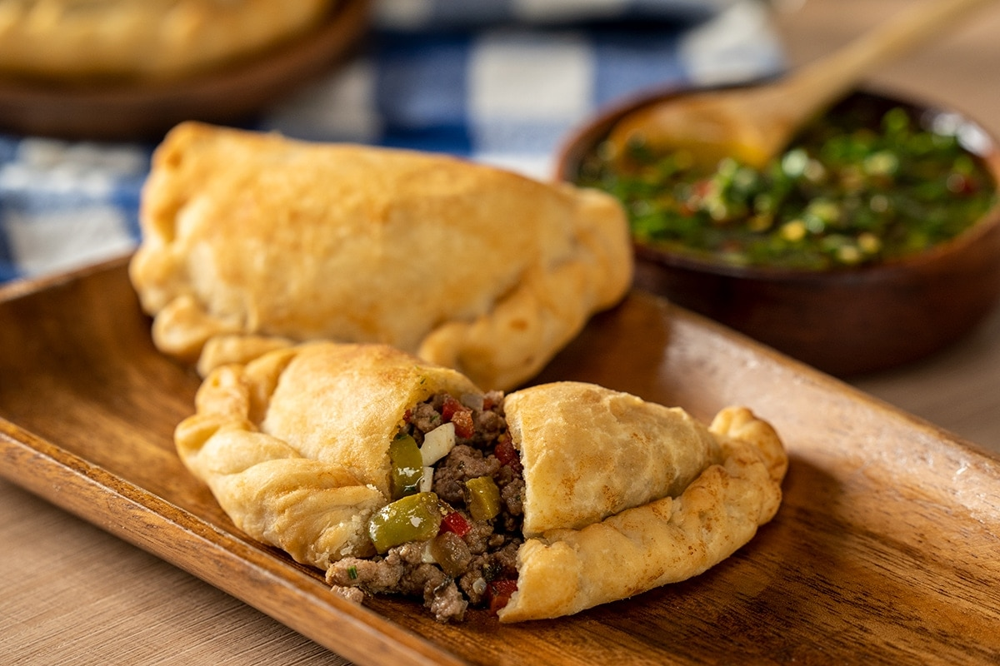

Argentinian Empanadas

Description
I might be biased but I have tried different types of pasties from all over the world, and I still think that the Argentinian empanadas are the best.
So simple, so delicious and ideal to just snack comfortably, alone, with family and/or friends.
Ingredients
- 500 gr of ground beef
- 500 gr of onion
- 2 tablespoons olive oil
- 1 glass of red wine
- 1 ½ tablespoons smoked paprika
- ½ teaspoon cumin
- 1 teaspoon of salt
- Fresh cilantro or parsley
- 1 pack of circular puff pastry
Steps
- In a big pan, heat up the oil.
- Add the onion and cook until translucent.
- Add the beef and cook until brown.
- Add the glass of red wine and let the alcohol steam out, as explained in our lentil stew recipe.
- Add the spices and mix well.
- Turn off the heat and leave to cool off until room temperature.
- Put a bit of the mixture in the circular puff pastry dough (for another recipe) and close it down as shown in the picture (or with a fork).
- Turn on the oven on 220°C until hot, and place the closed up empanadas on a tray. Optionally you can paint them with egg yolk for a golden color.
- Wait around 12 minutes and they will be ready to serve.